The goal of tidylayouts is to streamline the creation of multi-plot layouts for scientific papers. It allows to gradually expand and adjust layouts using a consistent and intuitive syntax.
tidylayouts is built around the pipe and supports plots with absolute dimensions, such as those created with tidyplots, as well as plain ggplot2 plots. Plots are aligned by their panels, not by their outer boxes, so axes and tags line up across the whole figure.
Usage
Start with a row of plots and extend it step by step. add_right() and add_below() append to a row or column, or wrap the layout in a new one.
library(tidylayouts)
row(p1, p2) |>
add_below(row(p3, p4)) |>
add_right(stretch_y(p5, p6)) |>
add_below(stretch_x(p7))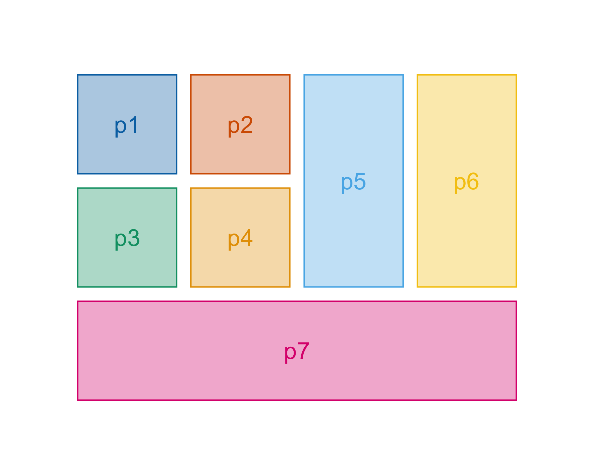
All plots above have a fixed panel size of 30 × 30 mm. stretch_y() and stretch_x() let a panel fill the space it gets from its neighbours: p5 and p6 span the height of the block on the left, p7 spans the width of everything above.
Real plots
tidyplots_options(
width = 25,
height = 25,
my_style = function(x) x |> remove_legend()
)
p1 <- study |>
tidyplot(x = group, y = score, color = dose) |>
add_mean_bar(alpha = 0.3) |>
add_sem_errorbar() |>
add_data_points() |>
add_test_asterisks(hide_info = TRUE)
p2 <- time_course |>
tidyplot(x = day, y = score, color = treatment, dodge_width = 0) |>
add_mean_line() |>
add_sem_ribbon()
p3 <- energy_week |>
tidyplot(x = date, y = power, color = energy_source) |>
add_areastack_relative()
p4 <- energy |>
tidyplot(y = energy, color = energy_source) |>
add_donut()
p5 <- climate |>
tidyplot(x = month, y = year, color = max_temperature) |>
add_heatmap() |>
adjust_size(height = 55)
p6 <- gene_expression |>
tidyplot(x = sample, y = external_gene_name, color = expression) |>
add_heatmap(scale = "row") |>
sort_y_axis_labels(direction, -padj) |>
adjust_size(height = 55) |>
remove_x_axis_title() |>
remove_y_axis_title()
p7 <- gene_expression |>
head(100) |>
tidyplot(x = sample_type, y = expression, color = condition) |>
add_violin() |>
add_data_points_beeswarm(white_border = TRUE) |>
adjust_x_axis_title("") |>
add_test_asterisks(hide_info = TRUE, bracket.nudge.y = 0.3) |>
adjust_y_axis_title("Gene expression") |>
split_plot(by = external_gene_name, nrow = 1)
tidyplots_options()By default, plots keep their size. In a row, panels are aligned at the bottom so that the x axes line up. The panel tags are still aligned at the top of the row.
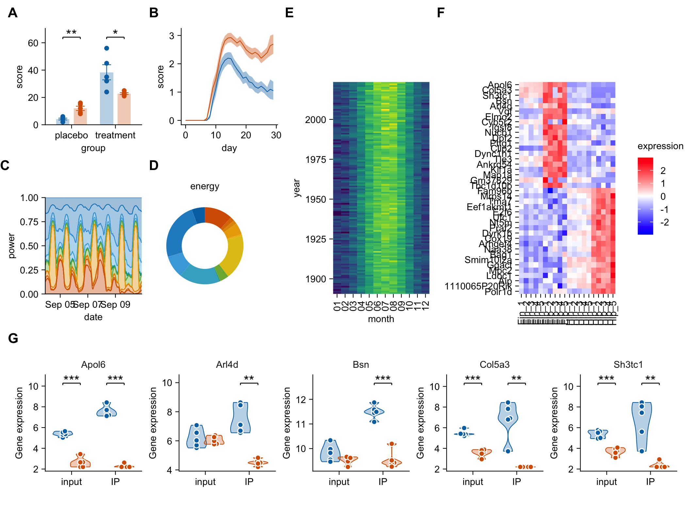
Freeing the heatmaps and the violin plots makes them fill the available space.
Design strings
layout_plots() describes a whole figure in one call. Each letter in the design is a plot; plots are assigned in alphabetical order of the letters, and # marks an empty cell.
layout_plots(
tag_group(p1, p2), p3, p4, p5, p6, p7,
design = "
ABEF
CDEF
GGGG
",
stretch_x = "G",
stretch_y = "EF",
center_x = "D",
tags = "A"
)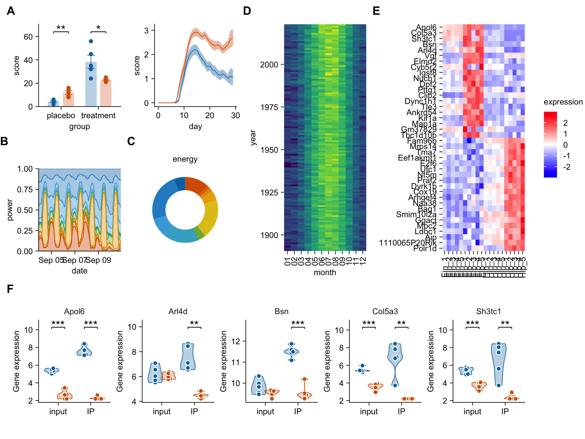
By default, each line of the design becomes a row, so the figure above has the same structure as row(p1, p2) |> add_below(row(p3, p4)) |> add_right(p5, p6) |> add_below(p7). With arrange_by = "column", each design column becomes a column instead, and with arrange_by = "grid" plots in the same row and column of the design share their lines.
The design shows the arrangement, not the size: plots keep their panel sizes, also when they span several cells. stretch_x, stretch_y, center_x and center_y change that for the listed plots, just like the functions of the same name. Tags are numbered in reading order, as with layout_tags(); here tag_group() lets the first two plots share tag A.
Alignment
Plots with a fixed size often leave some space in their row or column. horizontal_align and vertical_align decide where it goes. The defaults are "left" and "bottom", where the axis lines are.
row(p1, p2)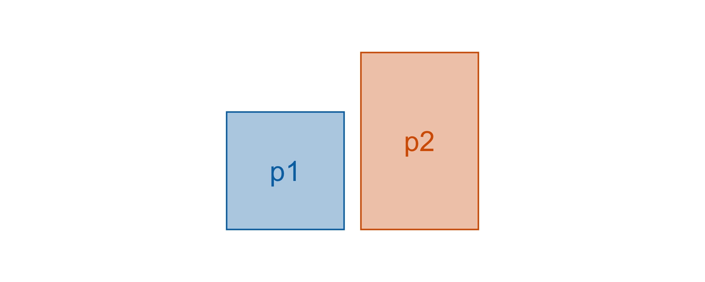
row(p1, p2, vertical_align = "top")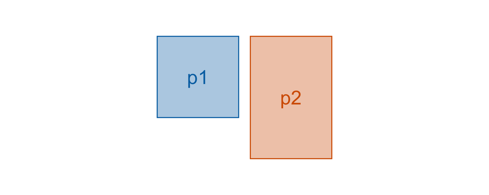
row(p1, p2, vertical_align = "center")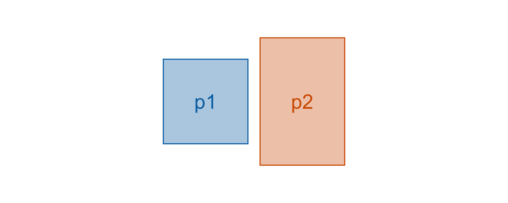
column(p1, p3, horizontal_align = "center")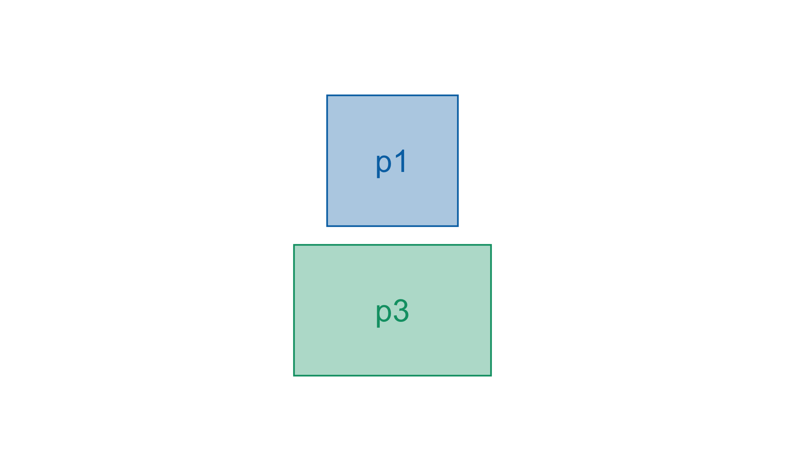
Alignment applies to what is directly inside a row or column. A nested row fills the width it is given and arranges its own plots, e.g. with the extra space between them:
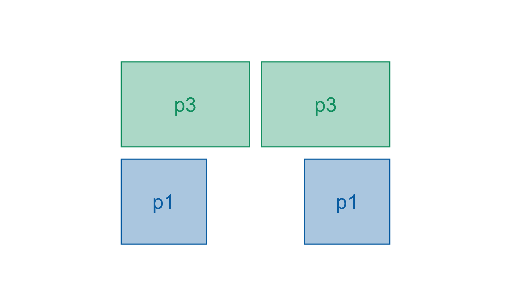
To center a single plot within the spare space next to it, use center_x() or center_y(). The panel keeps its size, the extra space goes to both sides, and the tag stays at the edge of the space.
row(p3, p3) |>
add_below(row(p1, center_x(p1))) |>
layout_tags("A")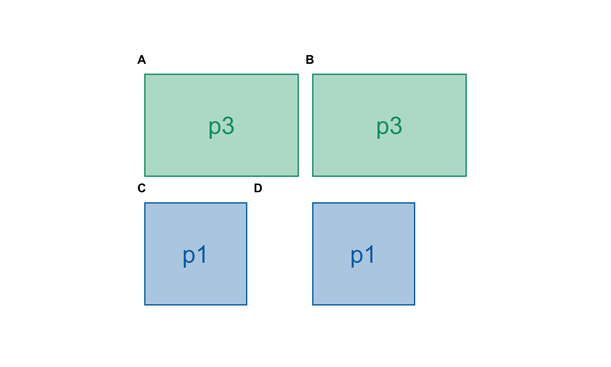
Rows of plots vs. grids
column(row(...), row(...)) lays out each row independently. grid() shares row and column tracks, so plots in the same grid column line up exactly.
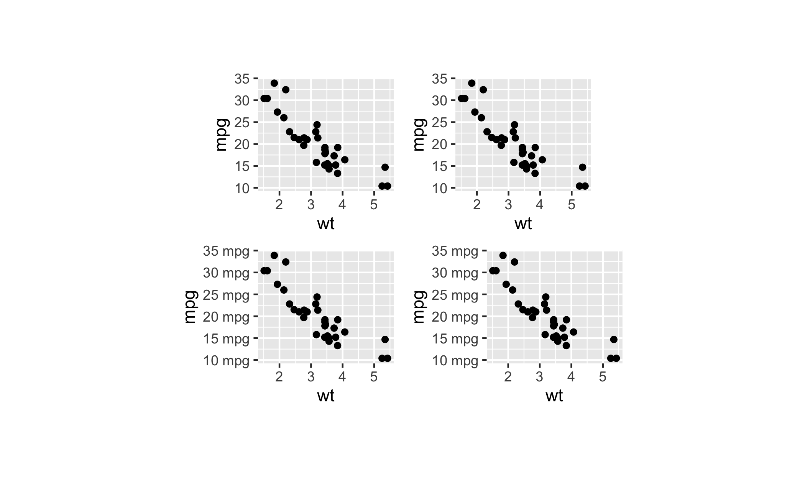
grid(narrow, narrow, wide, wide, ncol = 2)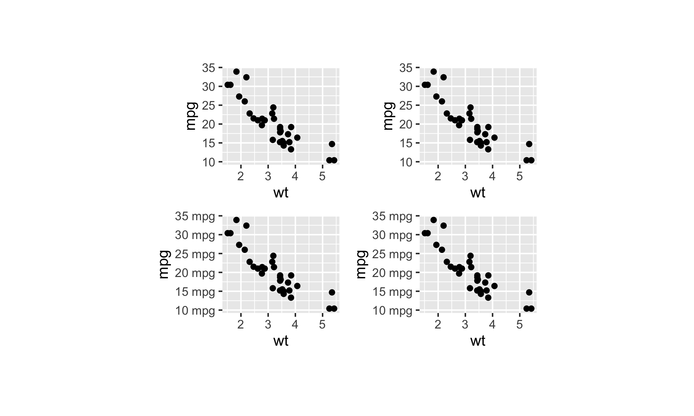
Layout options
row(narrow, wide) |>
add_below(stretch_x(narrow)) |>
layout_tags("a") |>
layout_title("Figure 1") |>
layout_size(width = 120)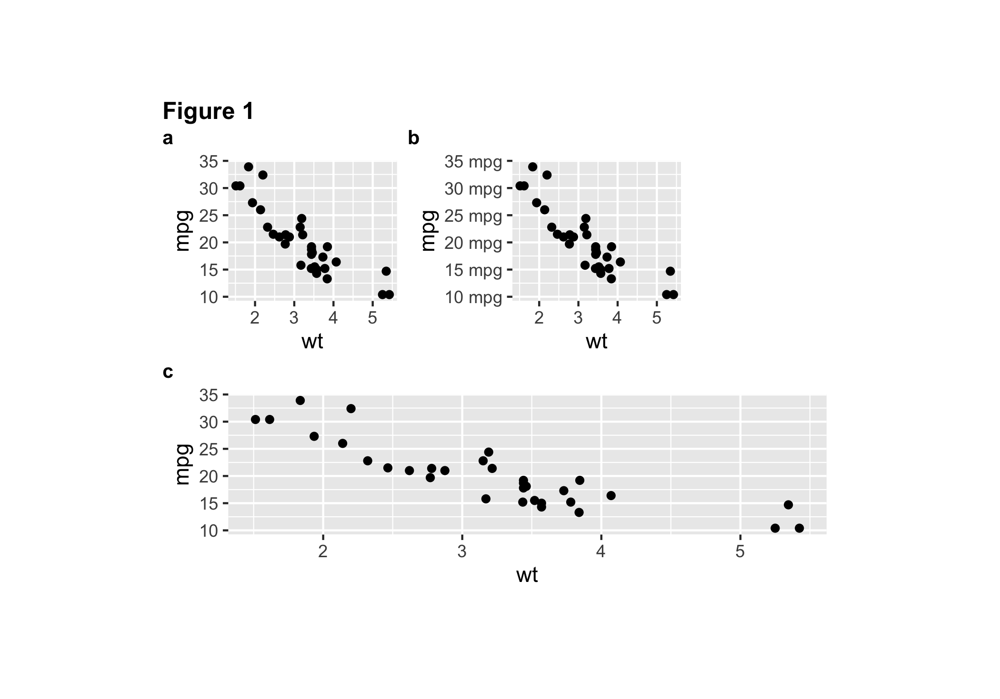
To let several plots share one tag, wrap them in tag_group(). Only the first plot of the group gets a tag, and the sequence continues after the group.
tag_group(row(narrow, wide)) |>
add_below(stretch_x(narrow)) |>
layout_tags("A")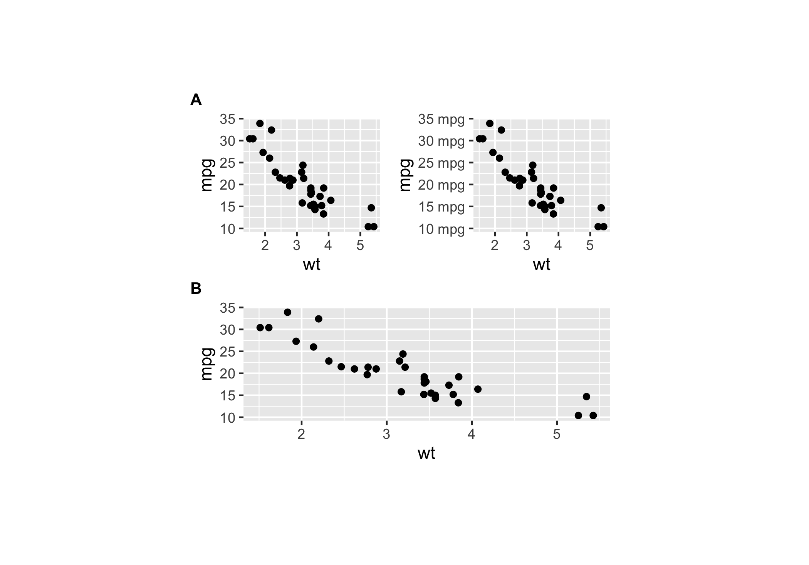
By default, the gaps between plots come from each plot’s own margins. layout_spacing() replaces them with fixed gaps in mm, so spacing stays even when plots use different themes. inner takes one value for both directions or c(horizontal, vertical); outer adds a margin around the whole figure.
row(narrow, wide) |>
add_below(stretch_x(narrow)) |>
layout_tags("a") |>
layout_spacing(inner = c(2, 6), outer = 5)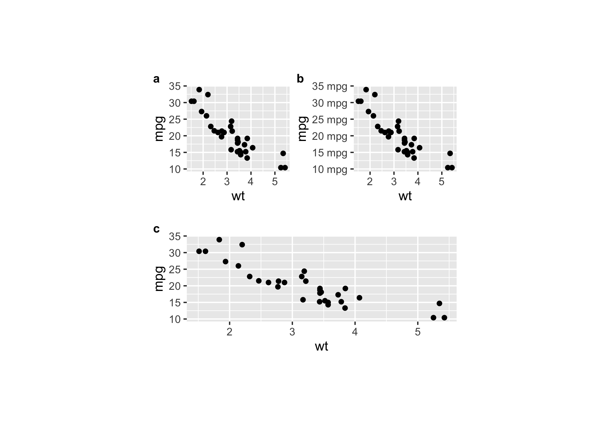
Save a figure at its exact physical size with save_layout(). If all panels have a fixed size, the figure size is computed from the layout.
save_layout(my_layout, "figure1.pdf")
save_layout(my_layout, "figure1.pdf", width = 183) # Nature double column